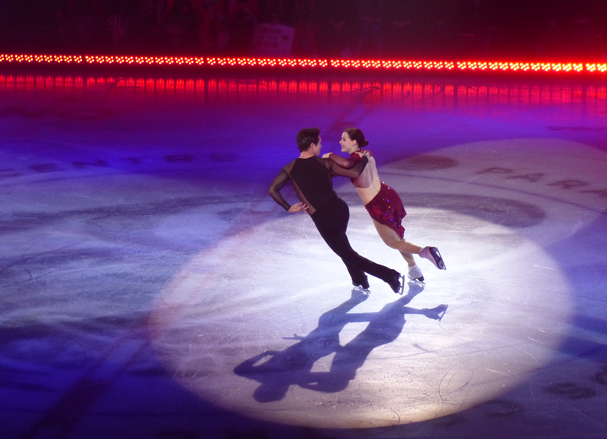
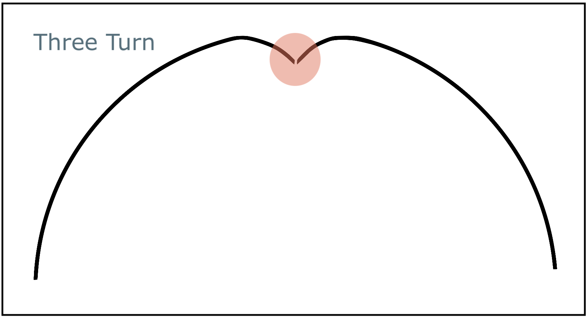
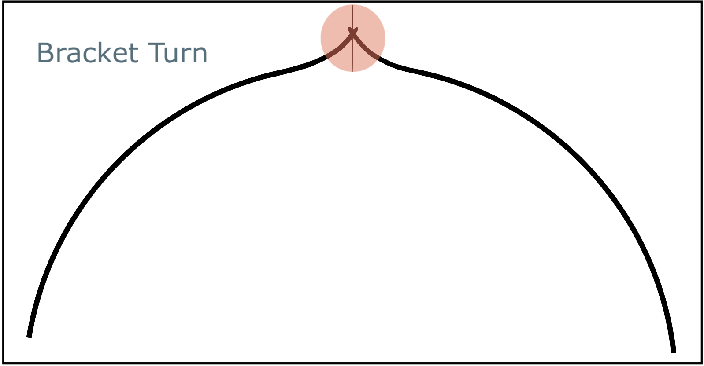
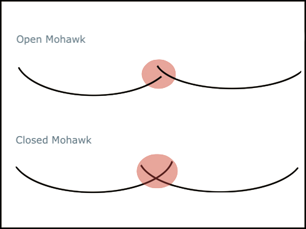
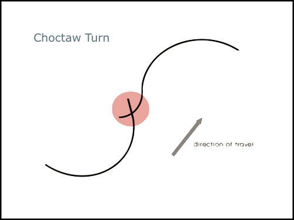
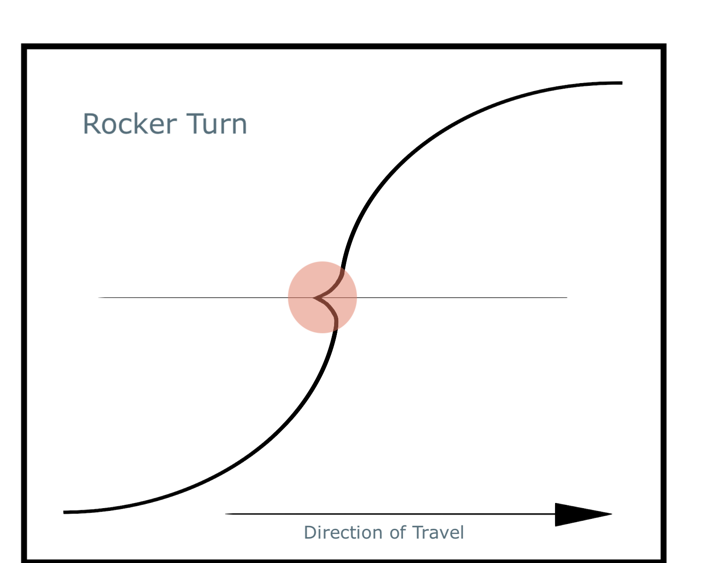
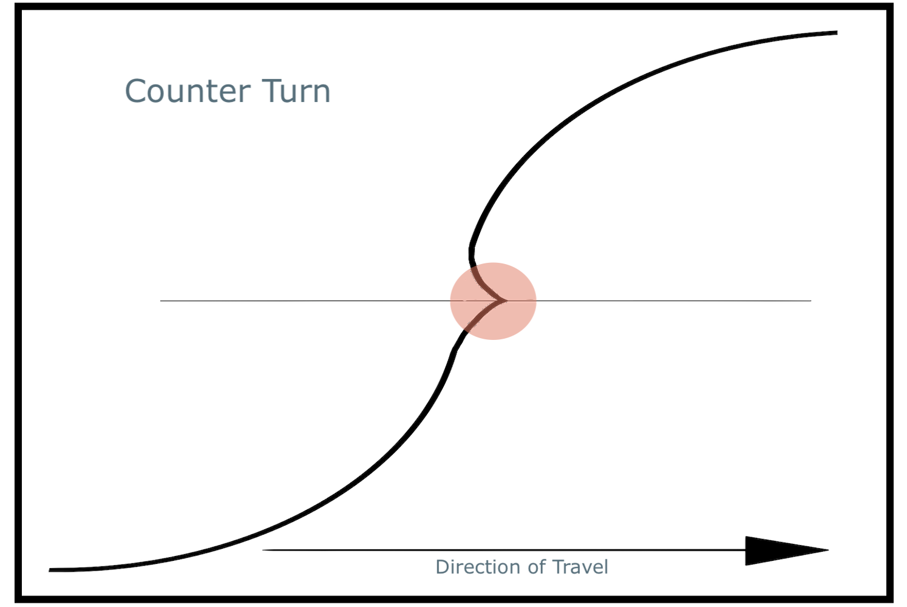
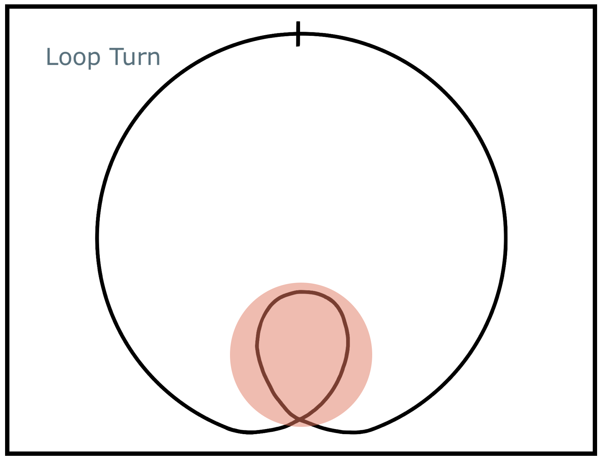
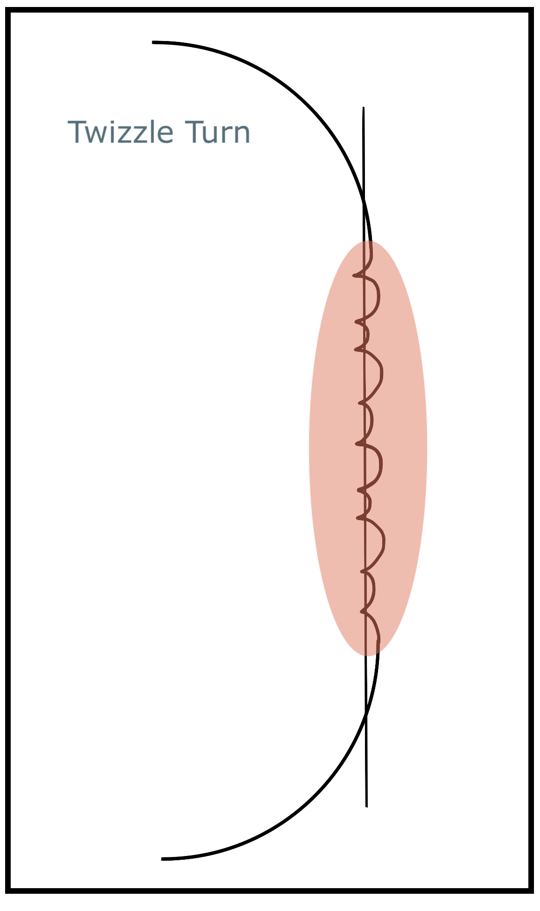

There are many different types of ice-skating turns. The type of turn depends on the entry edge and foot, the exit edge and foot, and the shape and direction of the turn tracing relative to the circle of the entry edge.
There are three stages to each turn: the entry, the turn, and the exit. The entry is the portion of the circle prior to the point at which the skater begins to execute the turn.
The turn is the point at which the skater leaves the circle and changes from the entry edge to the exit. The skater may leave the circle in either an inwards or outwards direction. On turns that do not change feet, this is what creates the cusp shaped tracing on the ice.
The exit of a turn occurs after the turn has occurred and is when the skater returns to a circle that is equal in size with the entry circle, and follows either the same or opposite concavity.
There are eight possible variations of each turn, where each is named and labelled according to three factors:
| RFI | RFO | RBI | RBO |
| LFI | LFO | LBI | LBO |
The turns covered on this page are... 

Three turns are a basic turn executed along one circle with a change of edge, but no change of foot.
Both the entry and exit edges are natural, which causes the cusp of the turn to point towards the centre of the circle.
When done correctly, the turn will have a small gap at the very tip of the cusp where the blade has changed from one edge to the other.
There are many free-leg positions that can be done during a three-turn. The most basic is the “closed three-turn”, where the free leg is held tightly to the other leg as the turn is done (approximately so that the big toe of the free-leg is placed at the top of the boot of the standing leg). Another common free-leg position is the “open three-turn”, where the free leg is extended away from the body and the toe is pointed, throughout all three stages of the turn.

Brackets are a difficult turn that are executed along one circle with a change of edge, but no change of foot.
Both the entry and exit edges are forced, which causes the cusp of the turn to point away from the centre of the circle.
When done correctly, the turn will have a small “X” shape, often referred to as “bunny ears”, at the very tip of the cusp where the tracing has crossed over itself as the blade has changed from one edge to another.

Mohawks are a basic turn that are executed along one circle with a change of foot but no change of edge.
Both the entry and exit edges are natural.
Unlike most other turns, the tracing of a mohawk does not have a cusp, and the shape of the tracing may vary depending on where the free-foot was placed on the ice relative to the other during the turn.
The mohawk may be “closed”, where the free-foot is placed down during the turn so that the exit edge crosses over the entry edge to create a large “X” shape.
The mohawk may be “open”, where the free-foot is placed down during the turn so that the exit edge and entry edge do not cross, and the is a small gap in the tracing where the skater changed from one foot to the other.

Choctaws are a turn that are executed changing from one circle to another with a both a change of edge and a change of foot.
One edge of a Choctaw is forced and the other is natural. Whether it is the entry or exit edge depends on the direction and entry edge of the choctaw being performed.
Unlike most other turns, the tracing of the Choctaw does not have a cusp, and the shape of the tracing may vary depending on where the free-foot was placed relative to the other foot. There are many free-foot variations of Choctaws which result in different tracings on the ice.

Rockers are a difficult turn that are executed changing from one circle to another with no change of edge and no change of foot.
The entry edge of a rocker is natural and the exit edge is forced, which causes the cusp of the turn to point towards the centre of the first circle.
A rocker is named after the rocking action that the blade undergoes to perform the turn. As the turn begins the foot is pushed into the circle and the skater's weight “rocks” to either the heel or the toe of the blade, depending on the direction the skater is travelling.

Counters are a difficult turn that are executed changing from one circle to another with no change of edge and no change of foot.
The entry edge of a counter is forced and the exit edge is natural, which causes the cusp of the turn to point away from the centre of the first circle.
A counter is named as such due to the counterrotation that is required between the lower and upper body of the skater to achieve the turn.

A loop is a difficult turn that remains on one edge, one foot, and one circle.
The loop turn is unique from other types of turn, as the loop enters and exits in the same direction, and remains on the same edge for the entirety of the turn.
Approximately halfway along the circle, the pressure into the ice is increased so that the depth of edge increases and the blade accelerates to travel 360° around a smaller circle before the pressure is released and the blade completes its rotation around the original circle.
The loop tracing should be 1.5 blade lengths tall and 1 blade length wide

A twizzle is a series of rockers and counters that are performed continuously with no knee rhythm separating the turns.
A twizzle should rotate at a consistent speed and follow along a linear axis without stalling (in either travel or rotation).
When done correctly, the weight will quickly and repeatedly rock back and forth across the rocker in very small and quick movements.